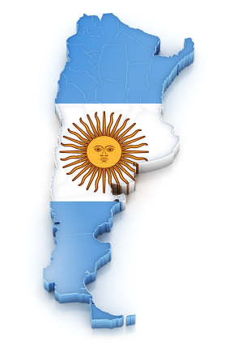

Matias Galante
Passionate programmer looking to create great things
Self-learning student looking to gain experience in software development and learn how I can improve the skills I have and apply them in the industry. My passion for software development sets me apart from my peers and helps me to work hard. I want to take what I already know and use it in a real-world application as well as expand my knowledge of software technologies to do more.

Where I'm from
I was born and raised in Córdoba, Argentina until I was 7 and later moved to the U.S. with my family.
Hobbies
- Program games
- Play games
- Exercise
- Hiking high places
- Watch movies and Netflix
Interests
- Enjoy travelling
- Doing activities with my family
- Listening to music as I go exercising
Currently live
I'm currently living in Orem, Utah. I'm married and attend school at Utah Valley University.
Projects for fun
As part of classes I've taken, I've participated in group projects in making small programs for a demonstration in class. On my own I coded two games from a tutorial series I following from a C# programming book. This is part of what I enjoy doing as part of my hobbies, it helps me to learn.
What I want to get into
My biggest passion for the industry is in web and software development. At the moment, anything software development sounds exciting to me.